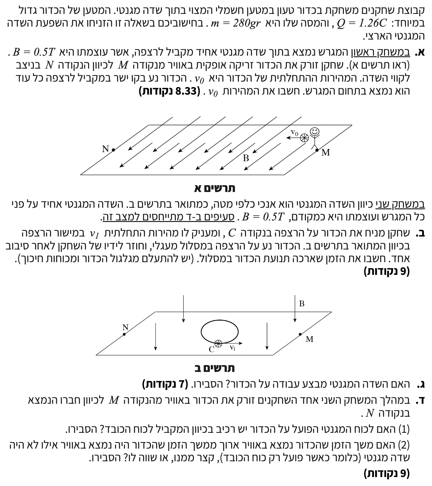

פתרון בגרות בפיזיקה: כוח לורנץ בשדה מגנטי
בגרות חשמל 2010 שאלה 4
בשאלה זו נחקור תנועה של כדור טעון בהשפעת שדה מגנטי וכוח הכובד. הבעיה מדגימה עקרונות של שיווי משקל כוחות, תנועה מעגלית קצובה, והפרדת תנועה בצירים (אי-תלות בין צירים).
עודכן:
--- --:--:--

[תמונת השאלה המקורית]
לא נמצאה תמונה בשם question-image.png באותה תיקייה.
מה נתון: מטען הכדור הוא \( Q = 1.26 \text{ C} \), הכדור חיובי. מסת הכדור הנתונה היא \( m = 280 \text{ gr} \). נבצע המרת יחידות (MKS) למסה כדי לעבוד ביחידות התקניות של קילוגרם: \( m = \frac{280}{1000} = 0.28 \text{ kg} \). עוצמת השדה המגנטי היא \( B = 0.5 \text{ T} \). השדה המגנטי מקביל לרצפה. תאוצת הכובד נבחרת להיות כלפי מטה וגודלה \( g = 10 \text{ m/s}^2 \). הכדור נזרק במהירות אופקית \( v_0 \) בניצב לקווי השדה ונע בקו ישר מקביל לרצפה.
מה מחפשים: אנו מתבקשים לחשב את גודל המהירות ההתחלתית \( v_0 \) שאיתה נזרק הכדור, כך שינוע בקו ישר (ללא הסטה אנכית).
נוסחאות ועקרונות בשימוש:
\( \Sigma\vec{F} = m\vec{a} \)
\( W = mg \)
\( F_B = qvB\sin\alpha \)
פתרון צעד-אחר-צעד:
העיקרון המרכזי כאן הוא החוק הראשון של ניוטון בציר האנכי. מכיוון שהכדור נע בקו ישר אופקי, אין לו תאוצה בציר האנכי (\( a_y = 0 \)), ולכן שקול הכוחות בציר זה חייב להיות אפס. נשרטט תרשים כוחות (FBD) עבור הכדור בזמן מעופו. נגדיר את ציר \( y \) כחיובי כלפי מעלה. נתון כי המהירות האופקית מכוונת שמאלה, והשדה המגנטי יוצא מן הדף.
כיוון המהירות \( \vec{v_0} \) ניצב לשדה המגנטי \( \vec{B} \), ולכן הזווית ביניהם היא \( \alpha = 90^\circ \). נציב בנוסחת הכוח המגנטי:
\[ F_B = Q \cdot v_0 \cdot B \cdot \sin(90^\circ) = Q \cdot v_0 \cdot B \]
נרשום את משוואת שקול הכוחות בציר האנכי (\( y \)) ונשווה לאפס מכיוון שאין תאוצה בציר זה:
\[ \Sigma F_y = F_B - mg = 0 \quad \Rightarrow \quad F_B = mg \]
נציב את הביטויים שמצאנו ונבודד את המהירות \( v_0 \):
\[ Q \cdot v_0 \cdot B = mg \quad \Rightarrow \quad v_0 = \frac{mg}{QB} \]
כעת, נציב את הערכים המספריים:
\[ v_0 = \frac{0.28 \cdot 10}{1.26 \cdot 0.5} = \frac{2.8}{0.63} = 4.444... \text{ m/s} \]
מסקנה: גודל המהירות ההתחלתית הוא \( v_0 = 4.44 \text{ m/s} \).
טיפ מורה:
כפי שלמדנו בכיתה, אנו משתמשים בכלל יד ימין כדי למצוא ולוודא את כיוון הכוח המגנטי: נכוון את האגודל (מהירות) שמאלה, ואת האצבעות (שדה מגנטי) החוצה מן הדף (אלינו). במצב זה, כף היד (המייצגת את הכוח) פונה כלפי מעלה. כך אנו מוודאים שאכן הכוח המגנטי הפועל על הכדור מכוון כלפי מעלה, ולכן מסוגל לאזן את כוח הכובד הפועל מטה.
מה נתון: כעת השדה המגנטי \( B = 0.5 \text{ T} \) מכוון אנכית כלפי מטה. הכדור מונח על הרצפה מקבל מהירות התחלתית \( v_1 \) במישור הרצפה ונע במסלול מעגלי. נזניח את כוחות החיכוך עם הרצפה. הכוח האנכי (כובד) מאוזן על ידי הכוח הנורמלי מהרצפה, ולכן נתמקד רק במישור האופקי.
מה מחפשים: אנו מתבקשים לחשב את משך הזמן שארכה תנועת הכדור במסלולו עד שחזר לידי השחקן - כלומר, אנו מחפשים את זמן המחזור \( T \) של התנועה המעגלית.
נוסחאות ועקרונות בשימוש:
\( F_B = qvB\sin\alpha \)
\( \Sigma\vec{F} = m\vec{a} \)
\( a_R = \frac{v^2}{R} \)
\( v = \frac{2\pi R}{T} \)
פתרון צעד-אחר-צעד:
כאשר חלקיק טעון נע במאונך לשדה מגנטי אחיד, הכוח המגנטי פועל ככוח צנטריפטלי מרכזי והחלקיק יבצע תנועה מעגלית קצובה במישור המאונך לשדה. נשרטט תרשים (ממבט על) של הכדור במישור הרצפה.
נרשום את משוואת החוק השני של ניוטון בציר הרדיאלי (לכיוון מרכז המעגל). הזווית בין המהירות במישור לשדה האנכי היא \( 90^\circ \):
\[ \Sigma F_R = m \cdot a_R \quad \Rightarrow \quad Q \cdot v_1 \cdot B = m \frac{v_1^2}{R} \]
נצמצם את המהירות \( v_1 \) (ששונה מאפס) מכל צד ונבודד את הרדיוס \( R \):
\[ Q \cdot B = \frac{m \cdot v_1}{R} \quad \Rightarrow \quad R = \frac{m \cdot v_1}{Q \cdot B} \]
נציב את הקשר בין מהירות, רדיוס וזמן מחזור \( v_1 = \frac{2\pi R}{T} \) לתוך המשוואה למעלה:
\[ R = \frac{m \cdot \left(\frac{2\pi R}{T}\right)}{Q \cdot B} \]
אפשר לצמצם את \( R \) משני האגפים, ולקבל ביטוי לזמן המחזור \( T \):
\[ 1 = \frac{2\pi m}{T \cdot Q \cdot B} \quad \Rightarrow \quad T = \frac{2\pi m}{Q \cdot B} \]
נציב את הנתונים המספריים:
\[ T = \frac{2\pi \cdot 0.28}{1.26 \cdot 0.5} = \frac{0.56\pi}{0.63} \approx 2.7925... \text{ s} \]
מסקנה: משך הזמן שארכה תנועת הכדור הוא \( T = 2.79 \text{ s} \).
טיפ מורה:
שימו לב להפתעה המעניינת! זמן המחזור לא תלוי כלל במהירות ההתחלתית \( v_1 \). אם נזרוק את הכדור מהר יותר, הוא אמנם ישלים מסלול עם רדיוס גדול יותר, אך מכיוון שהוא זז מהר יותר בול באותו יחס, הזמן להשלמת סיבוב יישאר זהה. זוהי "תדירות הציקלוטרון".
מה נתון: הכדור מבצע תנועה במרחב בהשפעת שדה מגנטי. הכוח המגנטי הפועל על חלקיק תלוי במכפלה הווקטורית של המהירות והשדה המגנטי.
מה מחפשים: אנו נשאלים האם השדה המגנטי מבצע עבודה על הכדור במהלך תנועתו, ומתבקשים להסביר.
נוסחאות ועקרונות בשימוש:
\( W = F \cdot \Delta x \cdot \cos\theta \)
משפט עבודה ואנרגיה: \( W_{\text{total}} = \Delta E_k \)
פתרון צעד-אחר-צעד:
עבודה מוגדרת כמכפלת הכוח בהעתק (או במהירות הרגעית) כפול קוסינוס הזווית שביניהם. על פי הגדרת כוח לורנץ, כיוון הכוח המגנטי \( \vec{F}_B \) תמיד מאונך (ניצב) לוקטור המהירות \( \vec{v} \) בכל רגע נתון.
מכיוון שהזווית בין הכוח למהירות (ולכן גם להעתק האינפיניטסימלי) היא תמיד \( 90^\circ \), הרי ש- \( \cos(90^\circ) = 0 \).
\[ W_B = F_B \cdot \Delta x \cdot \cos(90^\circ) = 0 \]
לכן, העבודה שעושה הכוח המגנטי היא תמיד אפס.
מסקנה: לא, השדה המגנטי אינו מבצע עבודה על הכדור.
טיפ מורה:
מסקנה פיזיקלית חשובה הנובעת מכך היא שעל פי משפט עבודה ואנרגיה, מכיוון שהכוח המגנטי תמיד מאונך למהירות הרגעית, הוא אינו מבצע עבודה (\( W = 0 \)). כתוצאה מכך, הכוח המגנטי כשלעצמו אינו יכול לשנות את האנרגיה הקינטית של החלקיק באופן ישיר (כלומר, הוא לא ישנה את גודל המהירות המשיקית, אלא רק את כיוונה). עם זאת, חשוב לזכור כי שינוי כיוון התנועה על ידי השדה המגנטי עשוי להשפיע על מסלול הגוף, ובכך להשפיע בעקיפין על מידת ההשפעה של כוחות אחרים הפועלים במערכת (כמו הכוח החשמלי או כח הכובד), שיכולים לבצע עבודה ולשנות את גודל המהירות.
מה נתון: במהלך המשחק השני (שבו השדה המגנטי \( \vec{B} \) מכוון אנכית כלפי מטה), אחד השחקנים זורק את הכדור באוויר מנקודה M לנקודה N.
מה מחפשים: האם לכוח המגנטי הפועל על הכדור יש רכיב בכיוון המקביל לכוח הכובד? נדרש הסבר.
נוסחאות ועקרונות בשימוש:
כלל יד ימין (כוח לורנץ)
פתרון צעד-אחר-צעד:
כוח הכובד (\( m\vec{g} \)) פועל תמיד בכיוון אנכי כלפי מטה. לפי נתוני המשחק השני, גם השדה המגנטי \( \vec{B} \) מכוון בכיוון אנכי כלפי מטה.
הכוח המגנטי \( \vec{F}_B \) נוצר בניצב (בזווית של \( 90^\circ \)) לכיוון השדה המגנטי \( \vec{B} \) (וגם למהירות).
מכיוון שהשדה המגנטי הוא על הציר האנכי, כל וקטור שמאונך אליו חייב להימצא לחלוטין במישור האופקי (המישור המקביל לרצפה). מכאן נובע שלכוח המגנטי אין שום רכיב על הציר האנכי.
מסקנה: לא. לכוח המגנטי אין רכיב המקביל לכוח הכובד, מאחר שהוא פועל כולו במישור האופקי המאונך לכוח הכובד (הפועל בציר האנכי).
טיפ מורה:
דמיינו מערכת צירים תלת-ממדית. אם כוח הכובד והשדה המגנטי שניהם נמצאים על ציר \( Z \), אזי הכוח המגנטי חייב להיות מונח איפשהו על מישור \( XY \). אין לו שום דרך להשפיע על מה שקורה בציר \( Z \).
מה נתון: הכדור נזרק באוויר. אנו משווים שני מצבים: מצב ראשון בו יש שדה מגנטי אנכי (כמו במשחק השני), ומצב שני ללא שדה מגנטי בכלל, בו פועל רק כוח הכובד.
מה מחפשים: האם משך הזמן שהכדור נמצא באוויר בהשפעת השדה המגנטי ארוך ממשך הזמן, קצר ממנו, או שווה לו (ביחס למצב ללא שדה מגנטי)?
סימולציה תלת-ממדית: השפעת השדה המגנטי על מסלול וזמן השהייה
שחקו עם מד השדה המגנטי, הפעילו את הזריקה, ושימו לב האם זמן הפגיעה בקרקע או המסלול האנכי משתנים כתוצאה מהשדה.
נוסחאות ועקרונות בשימוש:
עקרון אי-תלות בין צירים
פתרון צעד-אחר-צעד:
זמן השהייה של גוף הנזרק באוויר נקבע באופן בלעדי על ידי הנתונים הקינמטיים בציר האנכי בלבד: המיקום ההתחלתי והסופי בציר האנכי, המהירות ההתחלתית האנכית, וסך הכוחות (התאוצה) הפועלים בציר האנכי.
כפי שהוכחנו בסעיף ד'(1), הכוח המגנטי פועל כולו במישור האופקי ואין לו שום רכיב על הציר האנכי. לכן, משוואת הכוחות בציר האנכי נשארת בשני המקרים:
\[ \Sigma F_y = -mg = m a_y \quad \Rightarrow \quad a_y = -g \]
כלומר, התאוצה האנכית תמיד שווה ל- \( g \) כלפי מטה, בין אם יש שדה מגנטי ובין אם אין. מכיוון שתנאי ההתחלה האנכיים והתאוצה האנכית זהים בשני המקרים, הכדור ישהה באוויר בדיוק אותו משך זמן.
מסקנה: משך הזמן שהכדור נמצא באוויר יהיה שווה למשך הזמן אילו לא היה שדה מגנטי.
טיפ מורה:
המסלול התלת-ממדי של הכדור אכן ייראה שונה! עם השדה המגנטי הוא עשוי לנוע במסלול בורגי מסובך, בעוד שבלי שדה מגנטי הוא ינוע בפרבולה רגילה. אבל מבחינת ציר ה-Z, שניהם חווים בדיוק אותה "נפילה חופשית" ויפגעו בקרקע באותו הרגע!